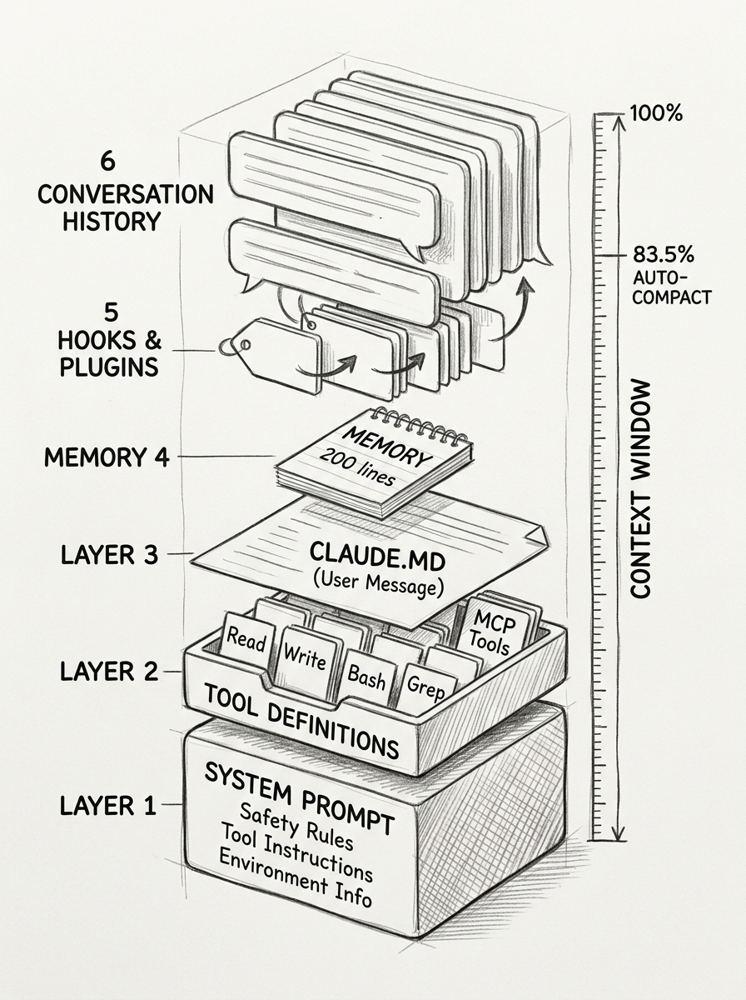

What\
What's Actually in Claude Code's Context Window
Twenty thousand tokens gone before you type your first message — if you're lucky. Add half a dozen MCP servers and that crosses 100,000. Tool definitions, safety instructions, project files, memory files, plugin injections — all packed into the same window your conversation needs. The more you extend your setup, the less room your AI has to think.
This is the hidden architecture of agentic coding tools. Here's what's actually inside.
flowchart TD
H([" The Layers "])
style H fill:#455a64,color:#fff,stroke:#90a4ae,stroke-width:3px,font-weight:bold,font-size:18px
Every API request assembles six layers into a single context window. The AI sees all of them at once. You see only your chat.

Layer 1: System Prompt. The foundation. Not a monolithic block — it's 110+ conditional fragments assembled per session based on your configuration. The prompt starts with "You are Claude Code" and then stacks seven sections: identity and safety rules, 13 sub-fragments on doing tasks (read before modifying, avoid over-engineering, no time estimates), executing actions with care (reversibility checks, blast radius), 14 sub-fragments on using tools (prefer Read over cat, Edit over sed), tone and output rules, conditional modes (plan, auto, team, Chrome — only active ones get included), and environment details (OS, shell, working directory, git branch, model). Roughly 3,000 tokens total. Invisible to you but shapes every response.
![Hand-drawn pencil sketch showing a blueprint-style diagram of the system prompt structure. Seven horizontal sections stacked inside a dotted outline: Identity and Safety, Doing Tasks with 13 sub-fragments, Executing with Care, Using Tools with 14 sub-fragments, Tone and Output, Conditional Modes with toggles for Plan Auto Team Chrome, and Environment. Below the main box, three separate blocks: Tool Definitions at 12K-100K tokens, CLAUDE.MD as user message, and Hooks plus Memory. Footer reads 110+ fragments assembled per session.](images/system-prompt-blueprint-sketch.jpg)
Layer 2: Tool Definitions. JSON schemas for every available tool — Read, Write, Bash, Grep, and all MCP server tools. The Bash tool alone is 1,558 tokens. Built-in tools total 12,000-18,000 tokens. Add MCP servers and it balloons: Asana adds 30,000, Google Docs adds 25,000, Playwright adds 14,000.
Layer 3: CLAUDE.md. Your project instructions. Delivered as a user message, not part of the system prompt. Loaded from multiple levels — managed policy, project root, user home — with more specific files taking priority.
Layer 4: Memory. The first 200 lines of MEMORY.md, loaded every session. Topic files (debugging notes, patterns) stay on disk until the AI reads them on demand.
Layer 5: Hooks and Plugins. SessionStart hooks inject context on launch. Plugins can inject entire knowledge graphs. UserPromptSubmit hooks add context based on what you type. Skill descriptions sit here too, budgeted at 2% of the context window.
Layer 6: Conversation. Your messages, AI responses, tool calls, and tool outputs. This is the layer that grows and eventually triggers compaction.
Community measurements confirm: a minimal setup uses about 20,000 tokens (10%) before your first message. Add six MCP servers and that jumps to 100,000+ tokens (50%+). The conversation gets whatever is left.
flowchart TD
H([" Compaction "])
style H fill:#455a64,color:#fff,stroke:#90a4ae,stroke-width:3px,font-weight:bold,font-size:18px
When the context window hits approximately 83.5% capacity, compaction fires automatically. First, microcompaction offloads bulky tool outputs to disk. Then, LLM-based summarization compresses the remaining conversation into a structured summary with five sections: task overview, current state, important discoveries, next steps, and context to preserve.
![Hand-drawn pencil sketch showing before and after compaction. Left side shows a container at 83.5% full with tool outputs and chat history piled on top of system prompt, tools, CLAUDE.md, memory, and hooks layers. Right side shows the same container after compaction: system prompt and tools survive with checkmarks, CLAUDE.md re-read from disk with refresh arrow, memory shows a question mark for uncertain re-loading, hooks re-fire with lightning bolts. Lost tool outputs and chat details float away as ghost outlines. Label reads approximately 13.7 percent retained.](images/compaction-lifecycle-sketch.jpg)
The results are brutal. Community research measured approximately 13.7% information retention after the first compaction. A second compaction drops that to roughly 6.9%. This is the "telephone game" effect — each summary loses detail.
CLAUDE.md is the only guaranteed survivor — it's re-read from disk, not preserved from the summary. Hooks and plugins regenerate fresh. Memory is a gray area: the system prompt instructions for accessing memory persist, but whether the first 200 lines of MEMORY.md are automatically re-injected after compaction is not explicitly documented. Everything you said in conversation that isn't in CLAUDE.md may vanish. And "re-injected" doesn't always mean "followed" — users report CLAUDE.md instructions being ignored after compaction even though the text is present.
flowchart TD
H([" Agent Context "])
style H fill:#455a64,color:#fff,stroke:#90a4ae,stroke-width:3px,font-weight:bold,font-size:18px
Sub-agents and agent teams don't inherit your context. They each build their own context window from scratch — with different layers depending on the type.
![Hand-drawn pencil sketch showing three side-by-side containers comparing context windows. Left container labeled Your Session shows all six layers fully stacked: full system prompt with 110+ fragments, all tool definitions at 12K-100K tokens, CLAUDE.md, memory at 200 lines, hooks and plugins, skill descriptions, and conversation history. Middle container labeled Sub-Agent is shorter: custom prompt replaces full system prompt, subset of tools, CLAUDE.md loaded fresh from disk, and own context space. A crossed-out arrow shows no history inherited from parent. Right container labeled Team Member matches the full session height with independent copies of all layers plus own MCP tools. A shared task list clipboard connects the right container to the others.](images/agent-context-sketch.jpg)
A sub-agent gets a custom system prompt that replaces the full 110-fragment prompt entirely. It loads CLAUDE.md and MCP servers independently — same project files, fresh read. But it has no access to your conversation history, your loaded skills, or your hook outputs. Its context window holds only its own work.
Agent teams take this further. Each teammate is a fully independent session with its own complete context window — all six layers rebuilt from scratch. They share a task list and can message each other, but context is completely isolated. This costs roughly 7x more tokens than a single session when teammates run in plan mode.
The isolation is deliberate. Sub-agents keep verbose operations out of your main context. When a sub-agent runs your test suite and produces 10,000 lines of output, only a summary returns to you.
flowchart TD
H([" Optimization "])
style H fill:#455a64,color:#fff,stroke:#90a4ae,stroke-width:3px,font-weight:bold,font-size:18px
Put everything important in CLAUDE.md. It's the only content that survives compaction by being re-read from disk. Conversational instructions will eventually be lost.
Keep MEMORY.md under 200 lines. Only the first 200 lines load at session start. Move detailed notes to topic files — Claude reads those on demand when relevant. Use /memory to audit what's saved.
Watch your MCP footprint. Each server adds tool definitions to every request, even when idle. CLI tools (gh, aws, gcloud) are more context-efficient than MCP servers. Use /mcp to check per-server costs.
Delegate verbose work to sub-agents. Test runs, log analysis, and documentation fetches produce huge tool outputs. Sub-agents absorb that cost in their own context window.
Use /compact with focus. Instead of generic compaction, tell it what matters: /compact focus on the API migration. The focus text gets passed directly to the summarization prompt.
The pattern isn't unique to Claude Code. Cursor, Copilot, Windsurf — all face the same architecture: a fixed-size window, invisible system layers consuming space, and a compaction mechanism that trades detail for room. But Claude Code is the most transparent about it. The difference is knowing what's in the window. Once you see the layers, you stop wondering why your AI forgot your instructions and start putting them where they'll survive.
References
- Anthropic. "How Claude remembers your project." code.claude.com/docs/en/memory.
- Anthropic. "How Claude Code works." code.claude.com/docs/en/how-claude-code-works.
- Anthropic. "Create custom subagents." code.claude.com/docs/en/sub-agents.
- Anthropic. "Orchestrate teams of Claude Code sessions." code.claude.com/docs/en/agent-teams.
- Anthropic. "Manage costs effectively." code.claude.com/docs/en/costs.
- Piebald-AI. "Claude Code System Prompts." github.com/Piebald-AI/claude-code-system-prompts.
- Damian Galarza. "Understanding Claude Code's Context Window." damiangalarza.com.
- Scott Spence. "Optimising MCP Server Context Usage." scottspence.com.